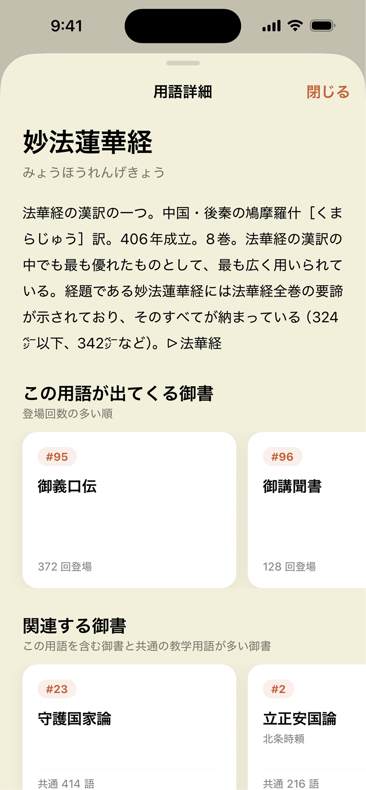
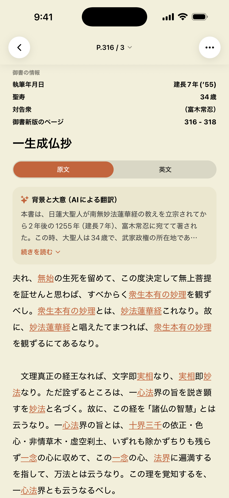
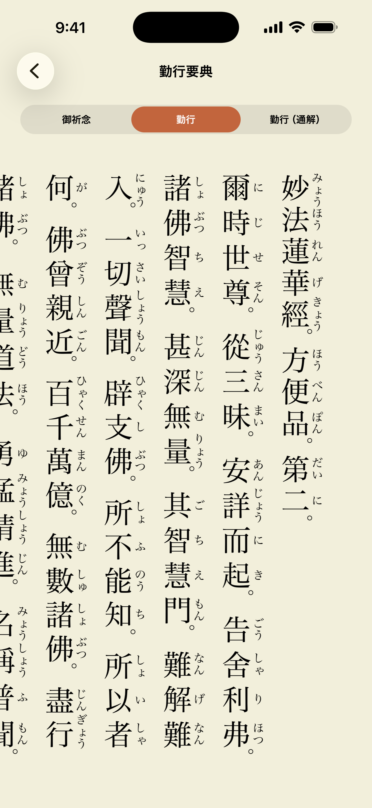
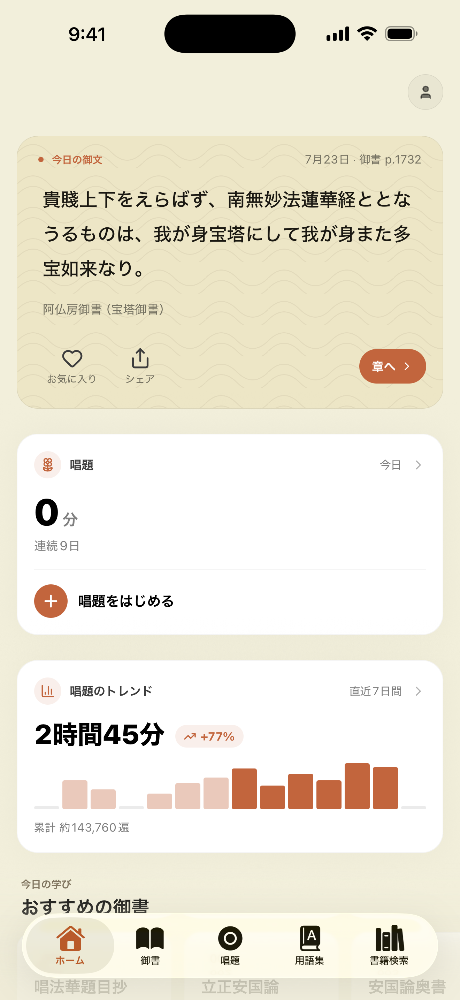
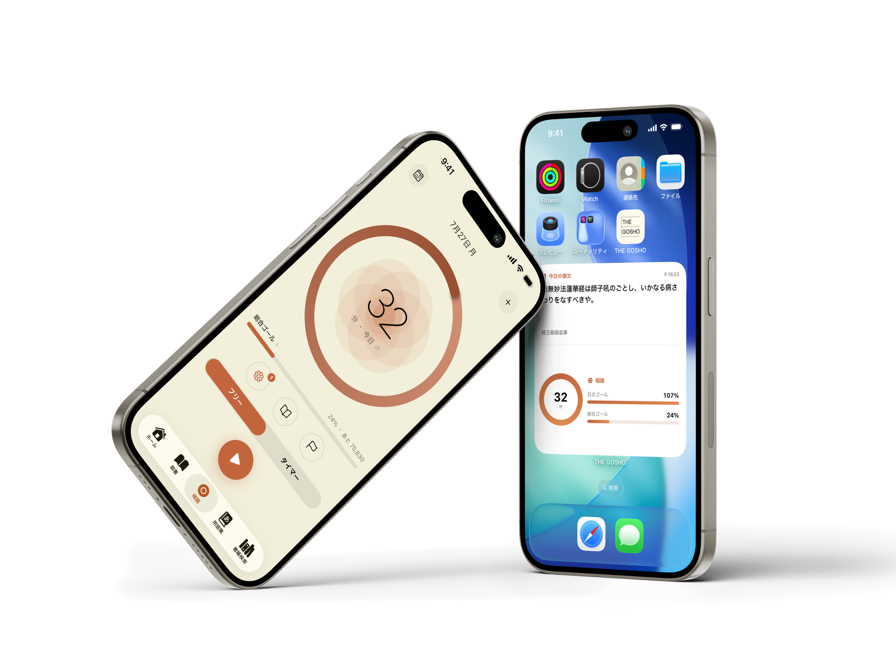

英訳と日本語の用語集をもとに、文ごとに組み立てています。
実際に収録している御書の一部です。
英訳御書の意訳と用語集をもとにAIで現代語訳。本文を読みながらわからない用語はタップで閲覧。
わからない語句は、その場で。本文の語句をタップすると、用語解説が開きます。御書名も仏教用語も、読んでいる手を止めずに引けます。

背景と大意も、本文と並びます。その御書がいつ、誰に、どんな状況で書かれたのか。読む前に置いておくと、本文の意味が変わります。
現代語訳は、英語版の The Writings of Nichiren Daishonin と日本語の用語集をもとに組み立てたものです。参考訳であり、解釈の正解を示すものではありません。

いつもの勤行に、通解を。勤行要典には書かれていない通解と読み方がつきます。御祈念、勤行、勤行（通解）を切り替えながら。

今日の御文が、毎朝ひとつ。アプリを開けば、日替わりの一節と、今日の唱題・7日間の記録がひと目に。読みかけの続きも、ここから。

フリー計測とタイマー機能付き。ウィジェットで今日の御文も表示できる。

日蓮仏教の実践は、信・行・学。このアプリは「行（勤行・唱題）」と「学（御書）」を、同じ場所にまとめました。
いつもの勤行に、通解と読み方を。そこから御書へ。読んで、また戻って、唱えて。日々の実践が、ひとつづきになる場所を目指しました。
御書461編を、現代語訳と用語解説つきで読めるアプリです。勤行要典と、唱題の計測・記録も同じアプリに入っています。
AI を使っていますが、思いつきで意訳したものではありません。英語版の The Writings of Nichiren Daishonin と、日本語の用語集。その両方を突き合わせて、文のまとまりごとに訳文を組み立てています。それでも参考訳であり、解釈の正解を示すものではありません。だから原文と並べて読めるようにしています。
ありません。広告も、広告目的の追跡もしていません。
されません。記録は自分のためのもので、ホーム画面のウィジェットからも見えます。
勤行要典を縦書き・ルビつきで表示します。方便品と自我偈。御祈念、勤行、勤行（通解）を切り替えられます。通常は書かれていない通解と読み方がつきます。
用語集、自分用のメモ、ブックマーク、お気に入り、続きから再開。選んだ箇所の原文と訳をまとめて共有することもできます。唱題をヘルスケアのマインドフルネスとして書き出すこともできます。指導の検索は、外部サービスとの連携が必要です。
Mitsuaki Ishida（個人）が制作・運営しています。特定の団体が運営・監修するものではありません。